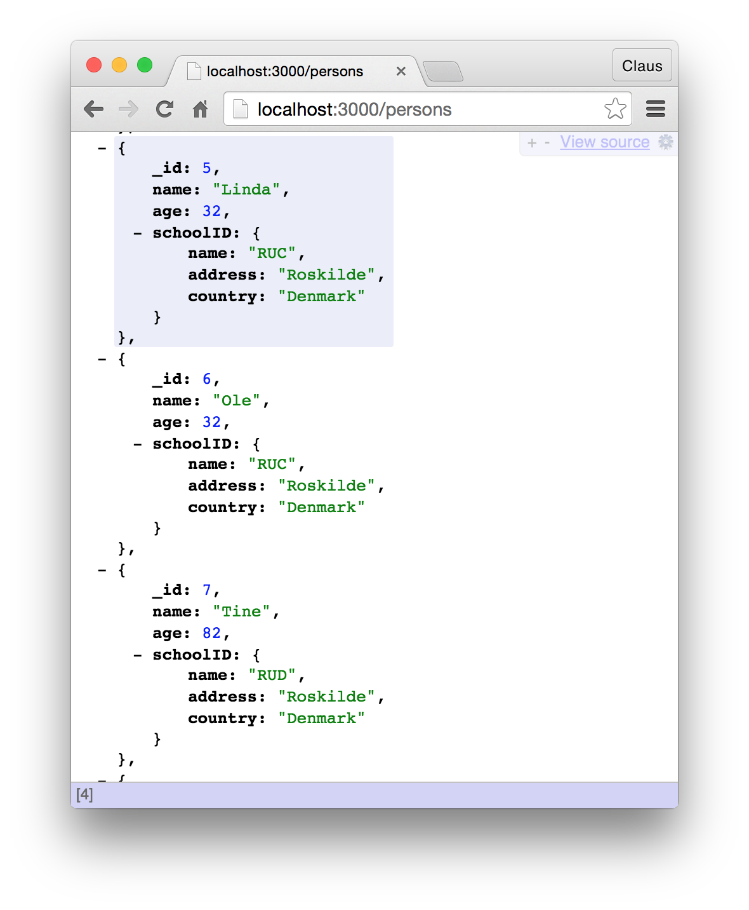

09.3 Exercise: MongoDB native driver and Express
Create an application that makes use of Express.js, MongoDB and the mongodb native driver.
The goal is, from the browser, to be able to request: localhost:3000/users and get a response with the data from the database in JSON format.

The result above is diffent from what you will get out of the user request
To get the nicely formated view, you can install the extension "JSONView" (for Google Chrome, or something similar for the other browsers).
Solution can be found on github